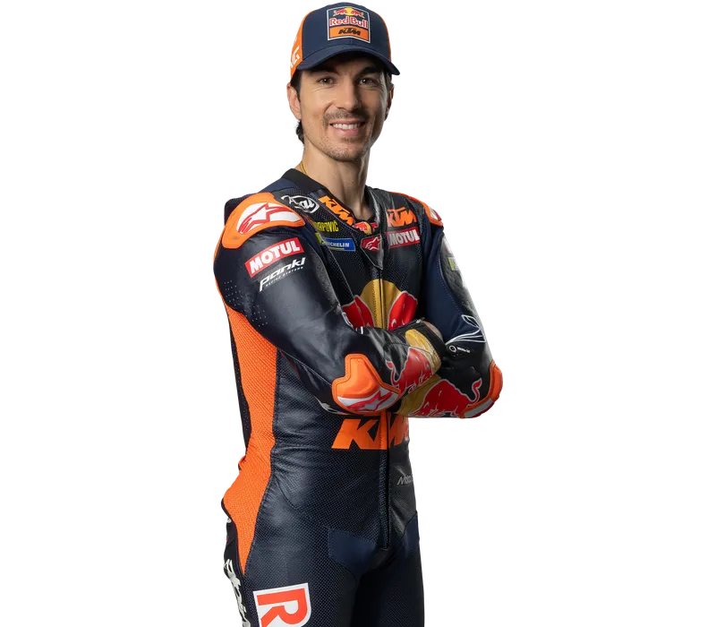

Maverick Viñales

Estás en: Inicio >> Piloto

Maverick Viñales es un piloto de motociclismo español, conocido por su habilidad y velocidad en MotoGP. Tras comenzar su carrera en Moto3 y pasar por Moto2, debutó en la categoría reina con Suzuki, y luego se unió a Yamaha, con la que consiguió varias victorias. En 2022, se incorporó a Aprilia en busca de nuevos retos. Es reconocido por su destreza en clasificaciones y su capacidad para adaptarse a diversas condiciones de carrera, aunque su consistencia ha sido un reto a lo largo de su carrera.
| Títulos de Campeón | Victorias en GP | Podios | Poles | Carreras |
|---|---|---|---|---|
| 1 | 26 | 75 | 26 | 260 |
Su nombre "Maverick" se lo pusieron sus padres inspirado en la película Top Gun.
Tiene dos primos que también estuvieron ligados al motociclismo: Isaac Viñales (compite en categorías de velocidad) y Dean Berta Viñales, quien tristemente falleció en 2021 durante una carrera en Supersport 300.
Viñales se ha convertido en el primer piloto en la era moderna de MotoGP que ha ganado Grandes Premios con tres fabricantes diferentes (Suzuki, Yamaha y Aprilia).